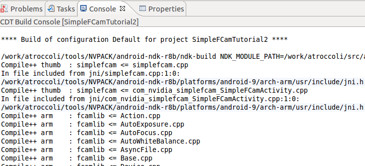

FCam is a C++ API for easy and precise control of digital cameras. Before taking this tutorial, it is highly recommended that you read the Frankencamera paper. The FCam API is available on the Tegra Android platform, the Nokia N900 and Nokia N9 phones. This tutorial focuses on the Tegra Android platform.
Note
The FCam library is tightly coupled with the Tegra Android software. A mismatch between the installed Tegra Android version and the FCam library will cause the API to fail. If you suspect that is the case, please write to us at NVR-Tegra-Prototype-Support@nvidia.com to verify that the version of the FCam library and the Android software you are running are supported.
Download the Tegra Android Jelly Bean (4.1) OS Image for the Tegra 3 Developer Kit. Run the installer, and see How to flash a system image? for step-by-step instructions.
Download fcam4tegra.zip, and expand it to some folder, e.g. /work/fcam4tegra/. Create an environment variable FCAM4TEGRA_PATH and set its value to that path. If the environment variables are not visible to Eclipse (e.g., on Mac if you launch Eclipse via Spotlight), you need to define it inside Eclipse. Go to Preferences > C/C++ > Build > Environment and Add variable FCAM4TEGRA_PATH and give it the correct value (such as /work/fcam4tegra/).
On recent releases of the NVIDIA Tegra software, the camera software is powered up early to enable fast camera startup. Since only one client can be connected to the camera at a time, we need to disable this feature in order to be able to run FCam. On your host machine, type:
adb shell setprop nv-camera-disable-early-graph 1
Now open the Android camera application and then close it. This will cause the property to be read and enforced. Note that you need to repeat this step after every reboot.
See also
.../NVPACK/android-ndk-r8c/docs/IMPORT_MODULE.html, this document explains how Android NDK modules work.
Locate tutorials/SimpleFCam inside the tutorials source tree.
Import the project into your Eclipse workspace File > Import > Android > Existing Android Code into Workspace. Check the option to Copy projects into workspace.
You can find the imported project in the Package Explorer as com.nvidia.simplefcam.SimpleFCamActivity. Right-click on the project and select Refactor > Rename and name it to SimpleFCam1.
To create a unique project from the SimpleFCam template, edit AndroidManifest.xml and change the package name:
<manifest xmlns:android="http://schemas.android.com/apk/res/android"
package="com.nvidia.example.simplefcam1"
The Android Package Manager uses the package name as a unique identifier for each application.
Change the string app_name in the file res/values/strings.xml to read SimpleFCam1.
Switch to the C/C++ Perspective. Convert the project to C++ project (right-click project, New > Convert to C/C++ Project). For more details see Importing an existing project.
For this project to build successfully, we need to define NDK_MODULE_PATH. Open the project’s preferences by right-clicking the project, and picking Properties > C/C++ Build from the context menu. Uncheck the Use default build command option and change the Build command: to add the definition of NDK_MODULE_PATH, passing in the absolute path for the location where you unzipped fcam4tegra.zip earlier, if you unzipped it in ~/work, you now have ~/work/fcam, and you’d enter something like /Users/user_name/work.
To understand why FCAM4TEGRA_PATH is required, take a look at jni/Android.mk
LOCAL_PATH := $(call my-dir)
include $(CLEAR_VARS)
LOCAL_MODULE := simplefcam
LOCAL_SRC_FILES := simplefcam.cpp com_nvidia_simplefcam_SimpleFCamActivity.cpp
LOCAL_STATIC_LIBRARIES += fcamlib
LOCAL_SHARED_LIBRARIES += fcamhal
include $(BUILD_SHARED_LIBRARY)
$(call import-add-path, $(FCAM4TEGRA_PATH)/modules)
$(call import-module, fcam/lib)
We have added references to fcamlib and fcamhal. These are modules that are defined within the call to $(call import-module, fcam/lib). In addition, the module search path is extended to include $(FCAM4TEGRA_PATH)/modules, where fcam/lib can be foudn. If your FCAM4TEGRA_PATH is defined incorrectly, the build will display an error saying fcam/lib was not found:
Android NDK: jni/Android.mk: Cannot find module with tag 'fcam' in import path
Android NDK: Are you sure your NDK_MODULE_PATH variable is properly defined ?
Android NDK: The following directories were searched:
Android NDK:
If everything is setup correctly, the project should now build successfully. Make sure you are on the C/C++ perspective and build the project.
Now let’s write a program that takes a picture and saves it to a file. Open jni/simplefcam.cpp. You will find a block of code that is empty:
#include <jni.h>
#include <stdio.h>
#include "simplefcam.h"
#include <FCam/Tegra.h>
// This is the main function to run FCam code.
// It will execute on its own thread.
void SimpleFCam::run()
{
logStream() << "This is an FCam example\n" << std::endl << flush();
}
We will write our own code into the SimpleFCam::run function. This function will execute on its own thread. In addition, the SimpleFCam class provides a function printToConsole to print to a TextView and a function named saveJPEG that will save a picture to the default user-visible Pictures path and notify the Android Media Scanner about it.
Copy the following code into the SimpleFCam::run function. This code captures an image with an exposure time of 25ms, a gain of 1, and white balance set to 6500K.
FCam::Tegra::Sensor sensor;
FCam::Tegra::Shot shot;
// Define the shot properties.
shot.exposure = 25000; // exposure duration in microseconds
shot.gain = 1.0f; // no additional analog gain
shot.whiteBalance = 6500; // color temperature in Kelvins
// Set the image object - with the desired resolution and format.
// Available formats for Tegra are YUV420p and RAW.
shot.image = FCam::Image( sensor.maxImageSize(), FCam::YUV420p );
// Send the request to the Sensor, this action launches the worker threads.
logStream() << "Requesting a new capture" << std::endl << flush();
sensor.capture( shot );
// Wait for the frame to come back, this is a blocking call.
FCam::Tegra::Frame frame = sensor.getFrame();
logStream() << "Got a frame back, saving file!" << std::endl << flush();
// Stop the worker threads and shut the sensor down.
sensor.stop();
// Save the file to disk.
saveJPEG( "SimpleFCam1.jpg", frame );
In Depth
This short program shows a few basic concepts. First, it declares a Sensor instance. This instance refers to the default camera in the system, which in the case of the Tegra 3 prototype is the rear camera. Other cameras can be opened passing an argument to the constructor, as we will show later on. Next, it sets up a Shot instance with the parameters of the request. Then, it creates the FCam::Image object that will hold the output. An Image has reference-counted storage and can be passed between objects without causing a deep copy. The Image object is also used to determine the Sensor resolution. Demosaicked data is provided in YUV planar format with subsampling of the U and V planes. In memory, the Y plane comes first and has full resolution, it is followed by the U plane at a quarter resolution (width/2 x height/2) and the V at the same resolution as the U plane. The other available formats are RAW and RGB24; note that for RGB24 the FCam runtime will do a conversion from YUV420p to RGB24.
Once the capture request is sent, the program waits for the capture to complete and retrieves the output Frame, and saves it as a jpg file.
Compile the application. Before running it, make sure you’ve done the steps outlined here. Now run it. You will see the following output:
To view the image, tap on the screen to close the app, and open the Gallery app. Open the Pictures Album and you will find SimpleFCam1.jpg in it.
Before we move to the next example, let’s take a look at SimpleFCamActivity.java. In particular, the static block is important.
// All FCam programs must load the fcamtegrahal library.
static {
System.loadLibrary("fcamtegrahal");
System.loadLibrary("simplefcam");
}
All FCam programs need to load the fcamtegrahal shared library. In addition, we load the the simplefcam library with our FCam program. When loading native libraries these should be loaded in reverse order of dependency. simplefcam depends on fcamtegrahal, so we load this latter one first.
The Sensor class has a single blocking function: Sensor::getFrame(). The capture function is asynchronous and will spawn two worker threads. One of the threads takes shots from the request queue and builds a request that is sent to the underlying camera driver. As a result of this asynchronous design, errors can not be directly passed to the calling functions. Instead, FCam provides a queue of events where errors will be pushed to. The SimpleFCam class has a function bool errorCheck() that checks for error events:
bool SimpleFCam::errorCheck() { bool error = false; FCam::Event e; while( FCam::getNextEvent( &e, FCam::Event::Error ) ) { logStream() << "FCam error: " << e.description << std::endl << flush(); error = true; } return error; }
We can add a call to errorCheck() right after getFrame():
FCam::Tegra::Frame frame = sensor.getFrame(); if ( errorCheck() ) return;
It is safe to bail out of the current scope by calling return. The Sensor destructor will take care of cleaning up any allocated resources. We can also explicitly request the Sensor to stop(), which will destroy the worker threads. In general, it is a good practive to call stop() as soon as you have retrieved all the frames, to destroy the working threads and stop the Sensor from capturing in the background.
Note
It is possible that an error occurs and the getFrame() function stalls due to its blocking nature. One could add an errorcheck() right after calling capture(shot) but there is no guarantee that the error will be reported by the worker thread before errorCheck() is called. The proper solution is to have a timeout parameter added to getFrame() which we will do on a future release.
In the previous example we captured a single shot. Let’s now program a burst capture that brackets three images.
Start a new SimpleFCam-based project. Rename it SimpleFCam2.
To capture a burst we have to create one Shot for every image we want to capture. In this example we will create three shots. We will also need three separate Image objects to store the output and three separate image Frame objects, as shown below. Add the code to the run() method.
FCam::Tegra::Sensor sensor;
std::vector<FCam::Tegra::Shot> shots( 3 );
std::vector<FCam::Tegra::Frame> frames( 3 );
// Define the shot properties for the first shot.
shots[0].exposure = 25000; // exposure duration in microseconds
shots[0].gain = 1.0f; // no additional analog gain
shots[0].whiteBalance = 6500; // color temperature in Kelvins
// Copy the shot parameters.
shots[1] = shots[2] = shots[0];
// Set the exposure of the two remaining shots.
shots[1].exposure = shots[0].exposure * 2;
shots[2].exposure = shots[0].exposure / 2;
// Create the result images.
shots[0].image = FCam::Image( sensor.maxImageSize(), FCam::YUV420p );
shots[1].image = FCam::Image( sensor.maxImageSize(), FCam::YUV420p );
shots[2].image = FCam::Image( sensor.maxImageSize(), FCam::YUV420p );
The Sensor::capture() is overloaded, it accepts both Shot and std::vector<Shot>. We will call capture once and wait for the three frames to be retrieved. Here is the remaining code:
logStream() << "Requesting a burst of 3 shots" << std::endl << flush();
sensor.capture( shots );
frames[0] = sensor.getFrame();
if( errorCheck() ) { return; }
logStream() << "Got first frame back!" << std::endl << flush();
frames[1] = sensor.getFrame();
if( errorCheck() ) { return; }
logStream() << "Got second frame back!" << std::endl << flush();
frames[2] = sensor.getFrame();
if( errorCheck() ) { return; }
logStream() << "Got third frame back!" << std::endl << flush();
sensor.stop();
// Save the file to disk.
logStream() << "Saving images.." << std::endl << flush();
saveJPEG( "SimpleFCam2-0.jpg", frames[0] );
saveJPEG( "SimpleFCam2-1.jpg", frames[1] );
saveJPEG( "SimpleFCam2-2.jpg", frames[2] );
Build the program and run it! Then open Gallery to see the three captured images.
In Depth
When capturing a burst, it is important to submit the set of shots in a single vector. This minimizes the time between frames, since requests will be sent to the imaging software stack as soon as it is ready to receive them, which is earlier than the time the frame is received through getFrame().
We have so far captured single shots and bursts. If we wanted to write a camera or a video recording application we need the ability to stream shots continuously. For this purpose, the sensor provides the Sensor::stream() function. On this example we will show how to write a simple application that does streaming combined with auto-exposure and auto-whitebalance.
Start a new SimpleFCam based project. Rename it SimpleFCam3.
Open simplefcam.cpp and add a new include to find the std::fabs() function:
#include<cmath>
Modify SimpleFCam::run(). Let’s start setting up our Sensor and Shot instances. We will define two shots, a meterShot that we will stream at a lower resolution to keep up a good frame rate, and a captureShot that we will send once to capture a full-size frame.
FCam::Tegra::Sensor sensor;
FCam::Tegra::Shot meterShot;
FCam::Tegra::Shot captureShot;
// Setup a half-sized capture for the streaming shots to get 30fps.
const int width = sensor.maxImageSize().width / 2;
const int height = sensor.maxImageSize().height / 2;
// Set the initial shot parameters.
meterShot.exposure = 16666;
meterShot.gain = 1.0f;
meterShot.image = FCam::Image( width, height, FCam::YUV420p );
To do metering, we need to enable histograms.
// Enable the histogram unit.
meterShot.histogram.enabled = true;
meterShot.histogram.region = FCam::Rect( 0, 0, width, height );
Setup some variables to determine when the exposure stabilizes.
// Stream until the exposure stabilizes.
int count = 0; // # of frames streamed
int stableCount = 0; // # of consecutive frames with stable exposure
float exposure; // total exposure for the current frame (exposure time * gain)
float lastExposure = 0; // total exposure for the previous frame
Now we will write the main metering loop. Every time we receive a frame we call the autoExpose() and autoWhiteBalance() functions to update the shot parameters. Every call we make to stream() clears the streaming shot we had set previously. We repeat our loop until the total exposure difference between two frames is less than 5% for 5 consecutive frames.
FCam::Tegra::Frame frame;
do
{
// Ask the sensor to stream with the given parameters.
sensor.stream( meterShot );
// Retrieve a frame.
frame = sensor.getFrame();
logStream() << "Frame " << count << " exposure: " << frame.exposure()
<< " gain: " << frame.gain() << " - " << std::endl << flush();
// Calculate the total exposure (including gain).
exposure = frame.exposure() * frame.gain();
// Increment stableCount if the exposure is within 5% of the previous one
if( std::fabs( exposure - lastExposure ) < 0.05f * lastExposure )
{
stableCount++;
}
else
{
stableCount = 0;
}
// Terminate when stable for 5 frames.
if( stableCount >= 5 ) { break; }
// Update lastExposure.
lastExposure = exposure;
// Call the autoexposure algorithm, it will update stream
// using this frame's histogram.
autoExpose( &meterShot, frame );
// Call the auto white-balance algorithm. It will similarly
// update the white balance using the histogram.
autoWhiteBalance( &meterShot, frame );
logStream() << "New exposure: " << meterShot.exposure << " gain: " << meterShot.gain << std::endl;
logStream() << flush();
++count;
}
while( true );
Once we exit the loop, meterShot has the parameters we would like to use for capture. We copy these parameters to a different shot and assign a full-size image.
// Now let's capture a full resolution shot
// Copy the meter shot but use a full resolution image.
captureShot = meterShot;
captureShot.image = FCam::Image( sensor.maxImageSize(), FCam::YUV420p );
Tell the Sensor to clear the streaming shot.
sensor.stopStreaming();
sensor.capture( captureShot );
Each shot instance has a different identifier. This identifier can be used to match the shot request with the frame request. In our example meterShot and captureShot will have different identifiers. We will call getFrame() until we have drained all the pending metering shots left in the pipeline and received the frame for our captureShot.
// We might still not have retrieved all the metering shots -
// call getFrame() until we get the captureShot.
while( sensor.shotsPending() > 0 && frame.shot().id != captureShot.id )
{
frame = sensor.getFrame();
}
Once we get the frame back, we save it to disk.
sensor.stop();
logStream() << "Full-size frame received, saving to file" << std::endl << flush();
// Write out the full-size picture.
saveJPEG( "SimpleFCam3.jpg", frame );
Compile the app and run it!
Next we will add a focus stage to our previous example. Focus is controlled through an FCam::Tegra::Lens instance. The Lens is an FCam::Device. Most mobile devices have a camera with a fixed aperture and a fixed focal length (i.e., no optical zoom), but even those cameras can be focused so that objects at particular focusing distance are sharp. The Tegra 3 Prototype has a fixed-focus front camera and a pair of rear-cameras with focus control. We will now add an autofocus routine to our previous example.
Open simplefcam.h and add the focus function:
// Run focus using the given shot parameters.
void focus( FCam::Tegra::Sensor &sensor, FCam::Tegra::Lens &lens, FCam::Tegra::Shot shot );
Open simplefcam.cpp and copy-paste the function definition:
void SimpleFCam::focus( FCam::Tegra::Sensor &sensor, FCam::Tegra::Lens &lens, FCam::Tegra::Shot shot )
{
// The shot was passed by value, so we can
// modify it without affecting the caller's instance.
// Disable the histogram
shot.histogram.enabled = false;
// Enable the whole-image sharpness statistic
shot.sharpness.enabled = true;
// Default AutoFocus routine
FCam::Tegra::AutoFocus autoFocus( &lens );
// Ask the autofocus algorithm to start sweeping the lens
autoFocus.startSweep();
// Stream until autofocus algorithm completes
FCam::Frame frame;
do
{
// Stream the updated shot
sensor.stream( shot );
// Retrieve a frame
frame = sensor.getFrame();
// The lens has tagged each frame with where it was focused
// during that frame. Let's retrieve it so we can print it out.
float diopters = frame["lens.focus"];
logStream() << "Lens focused at " << 100 / diopters << " cm ";
// The sensor has attached a sharpness map to each frame.
// Let's sum up all the values in it so we can print out
// the total sharpness of this frame.
int totalSharpness = 0;
for( int y = 0; y < frame.sharpness().height(); y++ )
{
for( int x = 0; x < frame.sharpness().width(); x++ )
{
totalSharpness += frame.sharpness()( x, y );
}
}
logStream() << " - total sharpness is " << totalSharpness << std::endl << flush();
// Update the auto-focus algorithm state tracking.
// We pass the frame and the shot.
autoFocus.update( frame, &shot );
}
while( !autoFocus.idle() );
logStream() << "Autofocus chose to focus at " << 100 / lens.getFocus() << std::endl << flush();
}
Finally, we modify SimpleFCam::run() to call focus after metering is finished. First, we create a Lens instance and attach it to the sensor. Attaching a device to a Sensor instance allows the device to tag the frames when they are returned.
#include <FCam/Tegra.h>
#include <FCam/Tegra/AutoFocus.h>
// This is the main function to run FCam code.
// It will execute on its own thread.
void SimpleFCam::run()
{
FCam::Tegra::Sensor sensor;
FCam::Tegra::Lens lens;
sensor.attach( &lens );
Then, at the end of the auto exposure and white balance loop, we add the call to focus. In a more optimized implementation you would combine the all the three tasks (exposure, white balance, focus) into a single loop.
while( true );
// Now call autofocus
focus( sensor, lens, meterShot );
In Depth
The AutoFocus helper object adds a FocusSteppingAction to the shot. An Action on a shot is scheduled to be executed at the given time, relative to the beginning of the shot exposure. Below is an example of FocusSteppingAction that spans the entire focus range in 15 steps:
FCam::Lens::FocusSteppingAction stepFocus( lens );
stepFocus.owner = ( void * ) this;
stepFocus.time = 0;
stepFocus.speed = lens->maxFocusSpeed();
stepFocus.step = ( lens->nearFocus() - lens->farFocus() ) / 15;
stepFocus.repeat = 15;
shot->addAction( stepFocus );
Every time the focus stepping action is triggered, it updates the next focus position by the given step. Also, note how we make use of the tags to get the lens position:
float diopters = frame["lens.focus"];
One other device that is available for use is the Flash. We will now show how to write a simple program to capture a pair of images, one with no-flash followed by one with flash.
Start a new SimpleFCam-based project, rename it SimpleFCam4.
Open simplefcam.cpp to start modifying the SimpleFCam::run() function.
Create a Flash device and attach it to the Sensor instance:
FCam::Tegra::Sensor sensor;
FCam::Tegra::Flash flash;
sensor.attach( &flash );
Create the two shots:
std::vector<FCam::Tegra::Shot> shots( 2 );
std::vector<FCam::Tegra::Frame> frames( 2 );
// Setup the first shot
shots[0].exposure = 25000;
shots[0].gain = 1.0f;
shots[0].whiteBalance = 6500;
// Copy the shot parameters
shots[1] = shots[0];
// Create the result images
shots[0].image = FCam::Image( sensor.maxImageSize(), FCam::YUV420p );
shots[1].image = FCam::Image( sensor.maxImageSize(), FCam::YUV420p );
Now we create a Flash::FireAction that we attach to the first shot.
// Make an action to fire the flash
FCam::Flash::FireAction fire( &flash );
// Flash on must be triggered at time 0 - duration is ignored.
fire.duration = flash.minDuration();
fire.time = 0; // at the start of the exposure
fire.brightness = flash.maxBrightness(); // at full power
// Add the fire action to the second shot.
shots[0].addAction( fire );
Send the requests and wait for the frames to come back:
logStream() << "Requesting a burst pair of no-flash/flash shots" << std::endl << flush();
sensor.capture( shots );
frames[0] = sensor.getFrame();
if( errorCheck() )
{
return;
}
logStream() << "Got first frame back!" << std::endl;
FCam::Flash::Tags tags0( frames[0] );
frames[1] = sensor.getFrame();
if( errorCheck() )
{
return;
}
logStream() << "Got second frame back!" << std::endl;
FCam::Flash::Tags tags1( frames[1] );
sensor.stop();
logStream() << "Frame 0 flash brightness: " << tags0.brightness << std::endl;
logStream() << "Frame 1 flash brightness: " << tags1.brightness << std::endl;
logStream() << flush();
// Save the file to disk.
logStream() << "Saving images..." << std::endl << flush();
saveJPEG( "SimpleFCam4-noflash.jpg", frames[0] );
saveJPEG( "SimpleFCam4-flash.jpg", frames[1] );
That’s all! Build the application and run it!
In Depth
Flash synchronization is an issue we didn’t address much in the code above. In the case of the Tegra Prototype, the camera driver does the flash synchronization; so we just set the Action::time to 0. Also, note that for rolling shutter sensors, different rows of two successive frames could be exposing at the same time, which would be a problem when capturing a flash/no-flash pair. Again, the camera driver is helping us and discards a partially-flashed frame. But if such aid had not been provided, one would need to consider either changing the Shot.frametime to prevent two frames from exposing some rows at the same time. Otherwise, if preserving a short frame time is required, one could discard the partially flashed frame.
You can create your own custom device for actions we want to synchronize with the Sensor stream. We do this by creating a new class that inherits from FCam::Device and implements void doAction(). In this example we will create a SoundPlayer device to play a shutter sound.
Start a new SimpleFCam based project, rename it SimpleFCam5.
Add a new header file to the project under jni and call it SoundPlayer.h. To play a sound on Android we will use the OpenSL ES API provided by the Android NDK. The sound file will be an asset that we will embed in our application. Copy and paste the following code:
#ifndef FCAM_BEEPER_H
#define FCAM_BEEPER_H
/** \file */
#include <string>
#include <FCam/FCam.h>
#include <FCam/Action.h>
#include <FCam/Device.h>
// for native asset manager
#include <sys/types.h>
#include <android/asset_manager.h>
#include <android/asset_manager_jni.h>
// for native audio
#include <SLES/OpenSLES.h>
#include <SLES/OpenSLES_Android.h>
/*
* A synchronized beeper example. As a device,
* it inherits from FCam::Device, and declares
* nested classes that inherit from CopyableAction
*/
class SoundPlayer : public FCam::Device
{
public:
SoundPlayer( AAssetManager *mgr );
~SoundPlayer();
/*
* An action representing the playback of a .WAV file.
*/
class SoundAction : public FCam::CopyableAction<SoundAction>
{
public:
/* The enum to return as type() */
enum
{
SoundPlay = CustomAction + 1,
};
/* Constructors and destructor */
~SoundAction();
SoundAction( SoundPlayer *b );
SoundAction( SoundPlayer *b, int time );
SoundAction( const SoundAction &b );
/* Implementation of doAction() as required */
void doAction();
/* Load the specified file into buffer and prepares playback */
void setAsset( const char *asset );
/* Return the underlying device */
SoundPlayer *getPlayer() const
{
return player;
}
int type() const
{
return SoundPlay;
}
protected:
SoundPlayer *player;
std::string assetname;
};
/* Normally, this is where a device would add metadata tags to a
* just-created frame, based on the timestamps in the
* Frame. However, we don't have anything useful to add here, so
* tagFrame does nothing. */
void tagFrame( FCam::Frame ) {}
/* Play an application asset */
bool playAsset( const char *asset );
/* Returns latency in microseconds */
int getLatency();
void handleEvent( const FCam::Event & ) {};
protected:
static bool createEngine();
static bool destroyEngine();
// Asset manager
AAssetManager *mgr;
// Acquired an engine ref
bool acquiredEngineRef;
// file descriptor player interfaces
SLObjectItf fdPlayerObject;
SLPlayItf fdPlayerPlay;
SLSeekItf fdPlayerSeek;
SLMuteSoloItf fdPlayerMuteSolo;
SLVolumeItf fdPlayerVolume;
};
#endif
Now we add a new source file jni/SoundPlayer.cpp that implements the new device:
#include <assert.h>
#include "SoundPlayer.h"
// engine interfaces
static unsigned int engineRefs = 0;
static SLObjectItf engineObject = NULL;
static SLEngineItf engineEngine;
// output mix interfaces
static SLObjectItf outputMixObject = NULL;
/** \file */
/***************************************************************/
/* SoundPlayer implementation */
/***************************************************************/
/* SoundPlayer constructor */
SoundPlayer::SoundPlayer( AAssetManager * mgr )
: mgr( mgr ), fdPlayerObject( NULL ), fdPlayerPlay( NULL ), fdPlayerSeek( NULL ),
fdPlayerMuteSolo( NULL ), fdPlayerVolume( NULL )
{
if( ( engineRefs == 0 ) && createEngine() )
{
acquiredEngineRef = true;
engineRefs++;
}
else
{
acquiredEngineRef = true;
engineRefs++;
}
}
/* SoundPlayer destructor */
SoundPlayer::~SoundPlayer()
{
// destroy file descriptor audio player object, and invalidate all associated interfaces
if( fdPlayerObject != NULL )
{
( *fdPlayerObject )->Destroy( fdPlayerObject );
fdPlayerObject = NULL;
fdPlayerPlay = NULL;
fdPlayerSeek = NULL;
fdPlayerMuteSolo = NULL;
fdPlayerVolume = NULL;
}
if( acquiredEngineRef )
{
engineRefs--;
if( engineRefs == 0 )
{
destroyEngine();
}
}
}
/* Play a buffer */
bool SoundPlayer::playAsset( const char * assetname )
{
SLresult result;
// destroy file descriptor audio player object, and invalidate all associated interfaces
if( fdPlayerObject != NULL )
{
( *fdPlayerObject )->Destroy( fdPlayerObject );
fdPlayerObject = NULL;
fdPlayerPlay = NULL;
fdPlayerSeek = NULL;
fdPlayerMuteSolo = NULL;
fdPlayerVolume = NULL;
}
assert( NULL != mgr );
AAsset *asset = AAssetManager_open( mgr, assetname, AASSET_MODE_UNKNOWN );
// the asset might not be found
if( NULL == asset )
{
return false;
}
// open asset as file descriptor
off_t start, length;
int fd = AAsset_openFileDescriptor( asset, &start, &length );
assert( 0 <= fd );
AAsset_close( asset );
// configure audio source
SLDataLocator_AndroidFD loc_fd = { SL_DATALOCATOR_ANDROIDFD, fd, start, length };
SLDataFormat_MIME format_mime = { SL_DATAFORMAT_MIME, NULL, SL_CONTAINERTYPE_UNSPECIFIED };
SLDataSource audioSrc = { &loc_fd, &format_mime };
// configure audio sink
SLDataLocator_OutputMix loc_outmix = { SL_DATALOCATOR_OUTPUTMIX, outputMixObject };
SLDataSink audioSnk = { &loc_outmix, NULL };
// create audio player
const SLInterfaceID ids[3] = { SL_IID_SEEK, SL_IID_MUTESOLO, SL_IID_VOLUME };
const SLboolean req[3] = { SL_BOOLEAN_TRUE, SL_BOOLEAN_TRUE, SL_BOOLEAN_TRUE };
result = ( *engineEngine )->CreateAudioPlayer( engineEngine, &fdPlayerObject, &audioSrc, &audioSnk, 3, ids, req );
assert( SL_RESULT_SUCCESS == result );
// realize the player
result = ( *fdPlayerObject )->Realize( fdPlayerObject, SL_BOOLEAN_FALSE );
assert( SL_RESULT_SUCCESS == result );
// get the play interface
result = ( *fdPlayerObject )->GetInterface( fdPlayerObject, SL_IID_PLAY, &fdPlayerPlay );
assert( SL_RESULT_SUCCESS == result );
// get the seek interface
result = ( *fdPlayerObject )->GetInterface( fdPlayerObject, SL_IID_SEEK, &fdPlayerSeek );
assert( SL_RESULT_SUCCESS == result );
// get the mute/solo interface
result = ( *fdPlayerObject )->GetInterface( fdPlayerObject, SL_IID_MUTESOLO, &fdPlayerMuteSolo );
assert( SL_RESULT_SUCCESS == result );
// get the volume interface
result = ( *fdPlayerObject )->GetInterface( fdPlayerObject, SL_IID_VOLUME, &fdPlayerVolume );
assert( SL_RESULT_SUCCESS == result );
// set the player's state
result = ( *fdPlayerPlay )->SetPlayState( fdPlayerPlay, SL_PLAYSTATE_PLAYING );
assert( SL_RESULT_SUCCESS == result );
return ( result == SL_RESULT_SUCCESS );
}
int SoundPlayer::getLatency()
{
return 0;
}
bool SoundPlayer::createEngine()
{
SLresult result;
// create engine
result = slCreateEngine( &engineObject, 0, NULL, 0, NULL, NULL );
assert( SL_RESULT_SUCCESS == result );
// realize the engine
result = ( *engineObject )->Realize( engineObject, SL_BOOLEAN_FALSE );
assert( SL_RESULT_SUCCESS == result );
// get the engine interface, which is needed in order to create other objects
result = ( *engineObject )->GetInterface( engineObject, SL_IID_ENGINE, &engineEngine );
assert( SL_RESULT_SUCCESS == result );
// create output mix, with environmental reverb specified as a non-required interface
const SLInterfaceID ids[1] = { SL_IID_ENVIRONMENTALREVERB };
const SLboolean req[1] = { SL_BOOLEAN_FALSE };
result = ( *engineEngine )->CreateOutputMix( engineEngine, &outputMixObject, 1, ids, req );
assert( SL_RESULT_SUCCESS == result );
// realize the output mix
result = ( *outputMixObject )->Realize( outputMixObject, SL_BOOLEAN_FALSE );
assert( SL_RESULT_SUCCESS == result );
return ( result == SL_RESULT_SUCCESS );
}
bool SoundPlayer::destroyEngine()
{
// destroy output mix object, and invalidate all associated interfaces
if( outputMixObject != NULL )
{
( *outputMixObject )->Destroy( outputMixObject );
outputMixObject = NULL;
}
// destroy engine object, and invalidate all associated interfaces
if( engineObject != NULL )
{
( *engineObject )->Destroy( engineObject );
engineObject = NULL;
engineEngine = NULL;
}
return true;
}
/***************************************************************/
/* SoundPlayer::SoundAction implementation */
/***************************************************************/
/* SoundAction constructors */
SoundPlayer::SoundAction::SoundAction( SoundPlayer *a )
{
player = a;
time = 0;
latency = a ? a->getLatency() : 0;
}
SoundPlayer::SoundAction::SoundAction( SoundPlayer *a, int t )
{
player = a;
time = t;
latency = a ? a->getLatency() : 0;
}
SoundPlayer::SoundAction::SoundAction( const SoundPlayer::SoundAction &b )
{
// Copy fields from the target.
time = b.time;
latency = b.latency;
player = b.getPlayer();
assetname = b.assetname;
}
/* SoundAction destructor */
SoundPlayer::SoundAction::~SoundAction()
{
}
void SoundPlayer::SoundAction::setAsset( const char *asset )
{
assetname = asset;
}
/* Perform the required action */
void SoundPlayer::SoundAction::doAction()
{
player->playAsset( assetname.c_str() );
}
Next is time to change the modify simplefcam.cpp. Add a new include:
#include "SoundPlayer.h"
Now we will write code into SimpleFCam::run(). Our program will capture a shot with two actions; an action to fire the flash and an action to play the shutter sound.
// Check that the native asset manager was succesfully initialized.
if( mNativeAssetManager == NULL )
{
return;
}
// Devices
FCam::Tegra::Sensor sensor;
FCam::Tegra::Flash flash;
// We defined a custom device to play a sound during the
// exposure. See SoundPlayer.h/cpp for details.
SoundPlayer audio( mNativeAssetManager );
sensor.attach( &flash ); // Attach the flash to the sensor
sensor.attach( &audio ); // Attach the sound player to the sensor
// Set the shot parameters
FCam::Tegra::Shot shot1;
shot1.exposure = 50000;
shot1.gain = 1.0f;
shot1.image = FCam::Image( sensor.maxImageSize(), FCam::YUV420p );
// Action (Flash)
FCam::Flash::FireAction fire( &flash );
fire.time = 0;
fire.duration = flash.minDuration();
fire.brightness = flash.maxBrightness();
// Action (Sound)
SoundPlayer::SoundAction click( &audio );
click.time = 0; // Start at the beginning of the exposure
click.setAsset( "camera_snd.mp3" );
// Attach actions
shot1.addAction( fire );
shot1.addAction( click );
// Order the sensor to capture a shot.
// The flash and the shutter sound should happen simultaneously.
sensor.capture( shot1 );
// Retrieve the frame from the sensor
FCam::Tegra::Frame frame = sensor.getFrame();
// Write out the file
saveJPEG( "SimpleFCam5.jpg", frame );
Download a camera shutter sound and save into the assets folder of the SimpleFCam5 project as camera_snd.mp3.
Modify Android.mk to include SoundPlayer.cpp and link the OpenSLES library.
LOCAL_MODULE := simplefcam
LOCAL_SRC_FILES := simplefcam.cpp com_nvidia_simplefcam_SimpleFCamActivity.cpp
LOCAL_SRC_FILES += SoundPlayer.cpp
LOCAL_STATIC_LIBRARIES += fcamlib libjpeg
LOCAL_SHARED_LIBRARIES += fcamhal
# libraries for native asset manager and OpenSLES
LOCAL_LDLIBS += -landroid -lOpenSLES
Build and run the application; you should see the flash and hear the shutter sound.
In this section we will use the FCam API to retrieve frames from the camera and process them using OpenCV and draw the image on the screen with OpenGL ES. If you haven’t yet read the Display Results using OpenGL section, please do so before proceeding.
We will replace the OpenCV camera in SimpleImageOpenCV_GL with an FCam camera.
Import the SimpleImageOpenCV_GL_FCam project to your Eclipse workspace. This will be our starting point.
The FCam code will need to provide its own camera control loop. For this purpose we will create a new class called ImageSource that starts a new worker thread with the purpose of executing the camera control loop. Every frame that becomes available is pushed by the worker thread to a queue of frames that the Engine rendering thread can pop.
Add a new file jni/ImageSource.h, with the following code. This is an abstract class that provides the basic framework to launch start a worker thread and manage the available frames queue. A derived class has to implement to work() function to run on the worker thread. We have chosen to store our frames as cv::Mat objects that we can use immediately with OpenCV.
#ifndef __IMAGESOURCE_H
#define __IMAGESOURCE_H
#include <deque>
#include <pthread.h>
#include <opencv2/core/core.hpp>
class ImageSource
{
public:
ImageSource();
virtual ~ImageSource();
/* Launches the worker thread */
void start();
/* Stops the worker thread - blocks until
* worker thread has completed.
*/
void stop();
/* Returns the number of available frames in
* the frame queue. */
size_t availableFrames();
/* Gets the next frame from the top of the
* queue. Returns false if the queue is empty,
* true if a frame has been retrieved.
*/
bool getFrame(cv::Mat &frame);
protected:
/* returns true if there was a request to stop work */
bool stopRequested();
/* Work function */
virtual void work() = 0;
/* put a new frame in the available queue */
void addAvailableFrame(cv::Mat &frame);
/* Worker thread entry function */
static void *workerFunc( void *arg );
private:
volatile bool mStopRequested;
pthread_t mWorkerThread;
pthread_mutex_t mQueueMutex;
std::deque<cv::Mat> mFramesQueue;
};
#endif /* __IMAGESOURCE_H */
Now we will add the implementation for these methods. Create a new file jni/ImageSource.cpp. We provide utility functions addAvailableFrame() to add a new frame to the queue and getFrame() to retrieve the next frame available. The queue is protected by a mutex to prevent concurrent access from the worker and the rendering threads.
#include "ImageSource.h"
ImageSource::ImageSource() :
mStopRequested( false ),
mWorkerThread( 0 )
{
}
ImageSource::~ImageSource()
{
if ( mWorkerThread != 0 )
{
stop();
}
}
void ImageSource::start()
{
// Create the queue mutex
pthread_mutex_init( &mQueueMutex, NULL );
// Create the thread
pthread_create( &mWorkerThread, NULL, &workerFunc, (void*) this );
}
void ImageSource::stop()
{
// Indicate a stop is being requested.
mStopRequested = true;
// Wait until the worker thread finishes
pthread_join( mWorkerThread, NULL );
// Now that thread has finished, destroy the mutex.
pthread_mutex_destroy( &mQueueMutex );
mWorkerThread = 0;
}
size_t ImageSource::availableFrames()
{
pthread_mutex_lock( &mQueueMutex );
size_t numFrames = mFramesQueue.size();
pthread_mutex_unlock( &mQueueMutex );
return numFrames;
}
bool ImageSource::getFrame( cv::Mat &frame )
{
bool result = true;
pthread_mutex_lock( &mQueueMutex );
if ( mFramesQueue.size() )
{
frame = mFramesQueue.front();
mFramesQueue.pop_front();
}
else
{
result = false;
}
pthread_mutex_unlock( &mQueueMutex );
return result;
}
void ImageSource::addAvailableFrame(cv::Mat &frame)
{
pthread_mutex_lock( &mQueueMutex );
mFramesQueue.push_back(frame);
pthread_mutex_unlock( &mQueueMutex );
}
bool ImageSource::stopRequested()
{
return mStopRequested;
}
void *ImageSource::workerFunc( void *arg )
{
ImageSource *instance = (ImageSource *) arg;
instance->work();
return NULL;
}
Next we will create a derived class called ImageSourceFCam that implements the FCam control loop. Add a new file jni/ImageSourceFCam.h. As the following code shows, only the constructor, destructor and work() function need to be provided, the base class provides the remaining infrastructure.
#ifndef _IMAGESOURCEFCAM_H
#define _IMAGESOURCEFCAM_H
#include "ImageSource.h"
/* ImageSourceFCam
* A class that uses the FCam API to stream images
*/
class ImageSourceFCam : public ImageSource
{
public:
ImageSourceFCam();
virtual ~ImageSourceFCam();
protected:
virtual void work();
};
#endif /* _IMAGESOURCEFCAM_H */
Add a new file called jni/ImageSourceFCam.cpp with the following code:
#include <opencv2/highgui/highgui.hpp>
#include <opencv2/imgproc/imgproc.hpp>
#include "ImageSourceFCam.h"
#include "FCam/Tegra.h"
#include <FCam/AutoExposure.h>
#include <FCam/AutoWhiteBalance.h>
ImageSourceFCam::ImageSourceFCam() :
ImageSource()
{
}
ImageSourceFCam::~ImageSourceFCam()
{
}
void ImageSourceFCam::work()
{
FCam::Tegra::Sensor sensor;
FCam::Tegra::Shot shot;
int width = 640;
int height = 480;
// Initial shot parameters
shot.exposure = 20000;
shot.gain = 1.0f;
shot.whiteBalance = 6500;
// Enable histograms for metering and whitebalance
shot.histogram.enabled = true;
shot.histogram.region = FCam::Rect( 0, 0, width, height );
shot.image = FCam::Image(width, height, FCam::YUV420p);
while ( !stopRequested() )
{
// Start streaming this shot.
sensor.stream(shot);
// Wait for a frame
FCam::Tegra::Frame frame = sensor.getFrame();
if ( !frame.image().valid() )
{
break;
}
// Do auto exposure and auto whitebalance
autoExpose( &shot, frame );
autoWhiteBalance( &shot, frame);
// Wrap the FCam frame as an OpenCV CV_8UC1 image
cv::Mat yuvimg(frame.image().height() * 3 / 2, frame.image().width(), CV_8UC1, (void*)frame.image()(0,0) );
// Convert the YUV420p image to BGR.
cv::Mat rgbimg;
cv::cvtColor(yuvimg, rgbimg, CV_YUV420p2BGR, 3);
// Add new image to the queue.
addAvailableFrame(rgbimg);
}
sensor.stopStreaming();
sensor.stop();
}
In Depth
The FCam code doesn’t present any new FCam API concept. What is new in this example is the conversion from YUV420p to a cv::Mat. This is done with the cv::cvtColor function. After the color conversion we push the frame to the queue.
Modify the Android.mk file to add the new source files and update the module name. After this change, verify that your project builds succesfully.
LOCAL_PATH := $(call my-dir)
include $(CLEAR_VARS)
OPENCV_CAMERA_MODULES := on
OPENCV_INSTALL_MODULES := on
OPENCV_LIB_TYPE := STATIC
include $(NVPACK_PATH)/OpenCV-2.4.2-Tegra-sdk/sdk/native/jni/OpenCV-tegra3.mk
LOCAL_MODULE := SimpleImageDisplayCVGLFCam
LOCAL_SRC_FILES := SimpleNativeGL_NV.cpp Engine.cpp DrawRect.cpp RectShader.cpp OpenCV_native.cpp
LOCAL_SRC_FILES += ImageSource.cpp ImageSourceFCam.cpp
LOCAL_LDLIBS += -lstdc++ -lc -lm -llog -landroid -ldl -lGLESv2 -lEGL
LOCAL_STATIC_LIBRARIES += nv_and_util nv_egl_util nv_bitfont nv_math nv_glesutil nv_hhdds nv_log nv_shader nv_file nv_thread
# Add libraries required by FCam.
LOCAL_STATIC_LIBRARIES += fcamlib
LOCAL_SHARED_LIBRARIES += fcamhal
LOCAL_CFLAGS += -std=gnu++0x
include $(BUILD_SHARED_LIBRARY)
# Add the folder with the NVIDIA helper
$(call import-add-path, $(NVPACK_PATH)/TDK_Samples/tegra_android_native_samples_v10p10/libs/jni)
# Import the fcam module
$(call import-add-path, $(FCAM4TEGRA_PATH)/modules)
$(call import-module,fcam/lib)
# Import the modules from the NVIDIA helper
$(call import-module, nv_and_util)
$(call import-module, nv_egl_util)
$(call import-module, nv_bitfont)
$(call import-module, nv_math)
$(call import-module, nv_glesutil)
$(call import-module, nv_hhdds)
$(call import-module, nv_log)
$(call import-module, nv_shader)
$(call import-module, nv_file)
$(call import-module, nv_thread)
We are now ready to add our new ImageSource instance to the Engine class. Open jni/Engine.h. Add the following:
#ifndef __ENGINE_H
#define __ENGINE_H
// Include the ImageSource abstraction class
#include "ImageSource.h"
We will add a std::unique_ptr instance to the ImageSource:
// OpenGL for OpenCV
GLint mCVlineShader;
// Image source used to grab frames.
std::unique_ptr<ImageSource> mImageSource;
};
#endif // __ENGINE_H
Open jni/Engine.cpp. Begin by adding a new include:
#include <nv_bitfont/nv_bitfont.h>
#include <nv_shader/nv_shader.h>
#include "ImageSourceFCam.h"
Modify the code that handles the button events to create and destroy the ImageSourceFCam. When the CAM button is pressed we want to start a new ImageSourceFCam instance, when IMAGE is pressed we want to switch to the image display and destroy the ImageSourceFCam insance.
// Check if the touch was inside of the first button...
if( mUiButtonZone[0].inside( mx, my ) )
{
// ``CAM`` button calls a camera capture function here
if( mImageSource.get() == nullptr )
{
mImageSource.reset( new ImageSourceFCam() );
mImageSource->start();
}
mHitButton = 0;
}
// ... or the second
else if( mUiButtonZone[1].inside( mx, my ) )
{
// If we are currently running the camera, stop it.
if( mImageSource.get() != nullptr )
{
// Stop the image source.
mImageSource.reset( nullptr );
}
// Clear any features that we might have computed
mCV.mFeature.clear();
// ``IMAGE`` button calls a load image function, and
// a function to update a texture here.
updateCVTexture( mImgTexture, mCV.runLoadCVImg() );
mHitButton = 1;
}
We also want to destroy the mImageSource if the user presses the back key and pauses the active. Inside the Engine::updateFrame function, add the following code:
// Time stands still when we're auto-paused, and we don't
// automatically render
if( mActiveMode )
{
// The time needs to advance in active mode.
advanceTime( deltaTime );
// This will try to set up EGL if it isn't set up
// When we first set up EGL completely, we also load our GLES resources
// If these are already set up or we succeed at setting them all up now, then
// we go ahead and render.
renderFrame( true );
}
else if( isForcedRenderPending() ) // forced rendering when needed for UI, etc.
{
// This forces to render.
renderFrame( true );
}
else
{
if( mImageSource.get() != nullptr )
{
mImageSource.reset( nullptr );
}
}
Finally, we want to grab a frame from mImageSource inside Engine::renderFrame. The function mImageSource->getFrame returns true if a new frame was available. If none was available, we don’t update the rendering texture.
// TODO: Add code to retrieve a frame using FCam
if( mImageSource.get() != nullptr )
{
// If there is a frame available, update the display
cv::Mat frame;
if( mImageSource->getFrame( frame ) )
{
updateCVTexture( mImgTexture, mCV.runOpenCVFeatureDetector( frame ) );
}
}
We are almost done. We have update all our native files. Recall that we need to load the libfcamtegrahal.so shared library in all our FCam applications. To do this, we need to subclass NativeActivity.
Add a new Java class called FCamNativeActivity under the package com.nvidia.fcamwithopencv. This class extends android.app.NativeActivity and adds a static method to load the required shared library into the Java VM.
package com.nvidia.fcamwithopencv;
import android.app.NativeActivity;
public class FCamNativeActivity extends NativeActivity {
static {
System.loadLibrary( "fcamtegrahal" );
}
}
Finally, we need to modify the AndroidManifest.xml. We will change the package name, remove the android::hasCode="false" tag, substitute ``NativeActivity with FCamNativeActivity and change the library name to load to SimpleImageDisplayCVGLFCam.
<manifest xmlns:android="http://schemas.android.com/apk/res/android"
package="com.nvidia.fcamwithopencv"
android:versionCode="1"
android:versionName="1.0">
<uses-sdk android:minSdkVersion="14" android:targetSdkVersion="15" />
<uses-permission android:name="android.permission.WRITE_EXTERNAL_STORAGE" > </uses-permission>
<uses-permission android:name="android.permission.CAMERA" ></uses-permission>
<uses-feature android:name="android.hardware.camera" ></uses-feature>
<uses-feature android:name="android.hardware.camera.autofocus" ></uses-feature>
<uses-feature android:name="android.hardware.camera.front" android:required="false"/>
<uses-feature android:name="android.hardware.camera.front.autofocus" android:required="false"/>
<!-- We do not have Java code. Therefore android:hasCode is set to false. -->
<application android:label="@string/app_name">
<!-- Our activity is the built-in NativeActivity framework class.
This will take care of integrating with our NDK code. -->
<activity android:name="com.nvidia.fcamwithopencv.FCamNativeActivity"
android:label="@string/app_name"
android:configChanges="orientation|keyboard|keyboardHidden"
android:theme="@android:style/Theme.NoTitleBar.Fullscreen">
<!-- Tell NativeActivity the name of or .so -->
<meta-data android:name="android.app.lib_name"
android:value="SimpleImageDisplayCVGLFCam" />
<intent-filter>
<action android:name="android.intent.action.MAIN" />
<category android:name="android.intent.category.LAUNCHER" />
</intent-filter>
</activity>
</application>
</manifest>
Now you can build and launch the application. For convenience, we have provided the complete project as SimpleImageOpenCV_GL_FCam_Complete.
To debug your FCam application, follow the steps in Debugging your OpenCV application to work around some issues with Google’s ADT plugin.
{kind=link}
{kind=link}